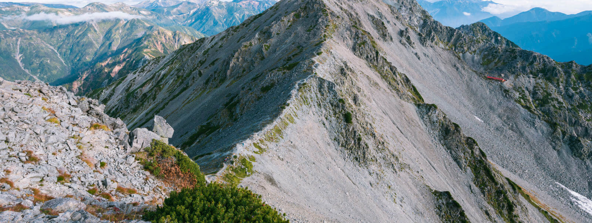
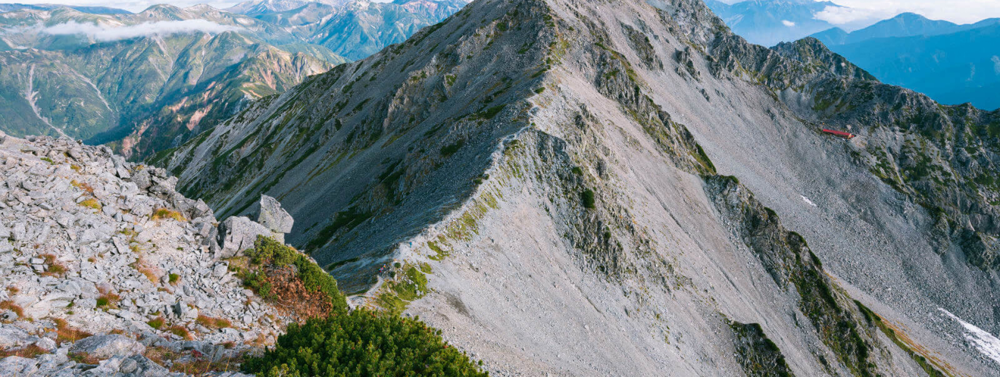

本文描述老師們使用特定的角度和適當的鏡頭，捕捉山脈的壯麗線條、峰巒的層次感和湖泊的倒影，呈現出山岳奇觀的美麗。
雲霧籠罩的山岳景觀為攝影師帶來一種神秘感，如何利用光影與視覺對比捕捉山巔的靜謐美感。耐心看完，你一定有所收穫
山岳攝影帶來的壯觀視角" - 高峰的攝影視角能將觀眾帶入壯麗的山脈景觀，營造出令人驚嘆和震撼的視覺效果。
捕捉山脈的攝影需要技巧和耐心，老師們祕而不宣的獨特構圖、光線和色彩，呈現山脈的宏偉和壯觀。
本文收錄許多攝影師通過運用色彩對比和明暗效果的經驗，捕捉山脈的變化豐富性，從而表達出山岳景觀的獨特之處。
"山岳攝影師的挑戰與獎勵" - 攝影師攀登山峰，追尋極致的攝影構圖，並從中獲得視覺和內心上的豐盛回報。
構圖、光線、對焦、曝光、色彩、景深、運動捕捉、創意角度。本文將深入講解各要點的基本概念


 
